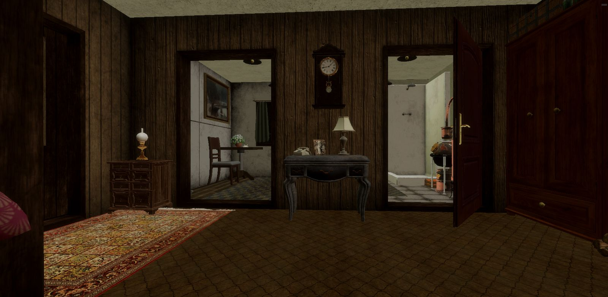
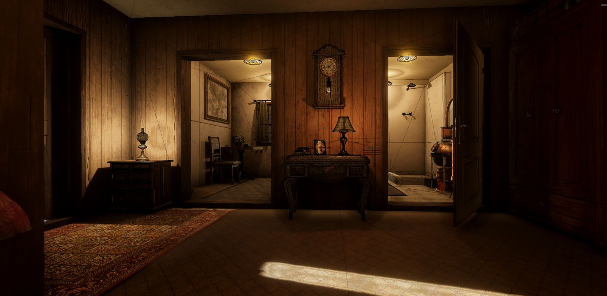
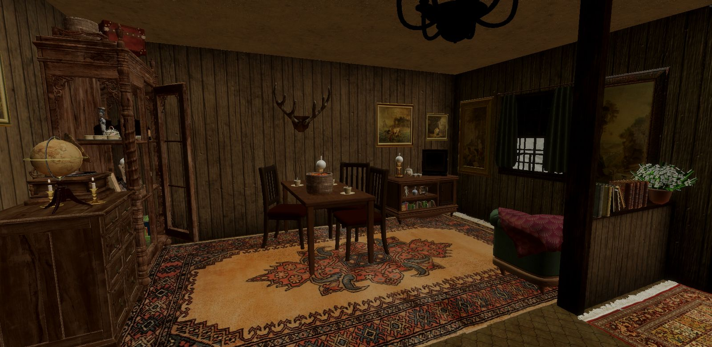
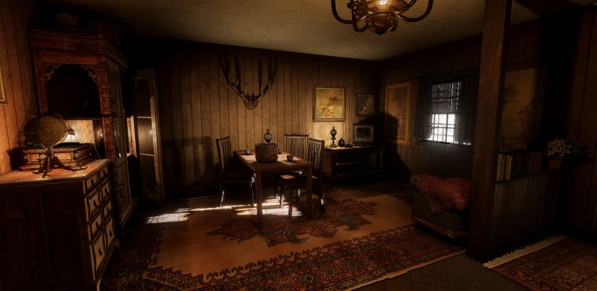
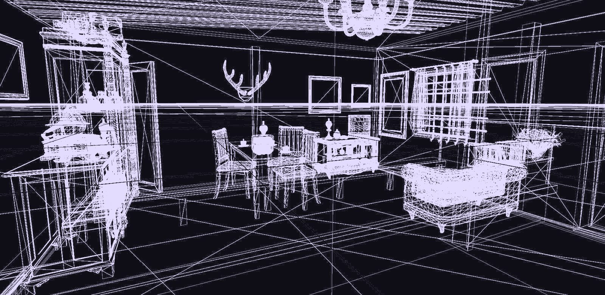
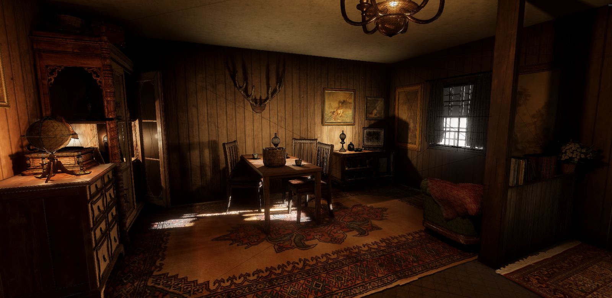

Simulation systemsSistemas de simulação
Lesson lifecycle, tasks and objectives, scoring, infractions and restart flows.Ciclo de vida de lição, tarefas e objetivos, pontuação, infrações e reinício.
LessonManagerTasksScoring
Seen inOnde aparece
I build and maintain the systems behind industrial and agricultural training simulators: vehicle physics, physical hardware controls, lessons and evaluation, reporting and performance. Most of that work happens inside large, shared codebases.
Construo e mantenho os sistemas por trás de simuladores de treinamento industriais e agrícolas: física de veículos, controles físicos, lições e avaliação, relatórios e performance. A maior parte desse trabalho acontece dentro de bases de código grandes e compartilhadas.
Each skill links to the project where you can see it. Click a project name to open its preview.Cada skill aponta para o projeto onde ela aparece. Clique no nome do projeto para abrir a pré-visualização.
Lesson lifecycle, tasks and objectives, scoring, infractions and restart flows.Ciclo de vida de lição, tarefas e objetivos, pontuação, infrações e reinício.
Rigidbodies, joints, trailers, implements, forklift and bin physics.Rigidbodies, joints, reboques, implementos, empilhadeira e física de bins.
Steering, analog axes, control panels, calibration and persistent mapping.Volante, eixos analógicos, painéis, calibração e mapeamento persistente.
Multi-camera setups, RenderTextures, mirrors, lighting and materials.Setups multi-câmera, RenderTextures, espelhos, iluminação e materiais.
Profiling startup and steady state, GC allocation and camera cost.Profiling de startup e steady state, alocação de GC e custo de câmeras.
Telemetry and statistics through JSON to report UI and PDF export.Telemetria e estatísticas passando por JSON até UI de relatório e PDF.
Custom Inspectors and editor tools that remove friction from production.Inspectors customizados e ferramentas de editor que tiram atrito da produção.
Composition, set dressing and light used as a layout tool.Composição, set dressing e luz usada como ferramenta de layout.
Each project opens a quick preview right here, or a full case page with process, evidence and images.
Cada projeto abre uma pré-visualização rápida aqui mesmo, ou uma página de case completo com processo, evidências e imagens.
Status shows how much evidence each case has. Drafts use only facts already confirmed; missing parts are marked PENDING.
O status mostra quanta evidência cada case já tem. Rascunhos usam só fatos já confirmados; o que falta está marcado como PENDENTE.
About five years of Unity development, moving from level implementation to owning runtime systems in training simulators. My strongest work is integration: physics, hardware, lessons, reports and performance inside existing architectures.
Cerca de cinco anos de desenvolvimento na Unity, saindo da implementação de níveis até assumir sistemas de runtime em simuladores de treinamento. Meu trabalho mais forte é integração: física, hardware, lições, relatórios e performance dentro de arquiteturas já existentes.
Each stage built on the previous one. The order matters more than any single title.
Cada etapa se apoiou na anterior. A ordem importa mais do que qualquer título.
PENDING: roles, companies and projectsPENDENTE: funções, empresas e projetos
Apple Farm and Schio Storage environments, main menu, garage and vehicle selection, then vehicle and implement integration and physics.
Ambientes Apple Farm e Schio Storage, menu principal, garagem e seleção de veículos; depois integração de veículos e implementos, e física.
Extended the inherited lesson and task systems. Built user registration and search, training statistics and JSON-to-PDF reports. House Farm study in parallel.
Estendi os sistemas de lição e tarefa herdados. Construí cadastro e busca de usuários, estatísticas de treinamento e relatórios de JSON para PDF. Estudo House Farm em paralelo.
Physical controls, bin and forklift physics debugging, industrial silo refinement, HDRP migration and XR cleanup.
Controles físicos, depuração de física de bins e empilhadeira, refinamento do silo industrial, migração para HDRP e limpeza de XR.
Yellow and RDLesson: mirrors, Control Mapper, lesson restart, rollover failure and 4K performance, with an agent-assisted workflow.
Yellow e RDLesson: espelhos, Control Mapper, reinício de lição, falha por capotamento e performance em 4K, com fluxo de trabalho assistido por agentes.
I read the existing implementation before replacing it, and I read the final diff before anything is committed, including prefabs and serialized references.
Leio a implementação existente antes de substituí-la, e leio o diff final antes de qualquer commit, incluindo prefabs e referências serializadas.
Every skill points to the projects where it can be checked.
Cada skill aponta para os projetos onde pode ser verificada.
| AreaÁrea | IncludesInclui | Shown inOnde aparece |
|---|---|---|
| Unity runtime | Scene and prefab architecture, prefab variants, serialized references, loading and scene transitionsArquitetura de cenas e prefabs, prefab variants, referências serializadas, loading e transição de cenas | Schio · Yellow |
| Simulation systemsSistemas de simulação | Lesson lifecycle, tasks and objectives, scoring, infractions, restartCiclo de vida de lição, tarefas e objetivos, pontuação, infrações, reinício | Schio · Yellow · RDLesson |
| Vehicle physicsFísica de veículos | Rigidbodies, joints, trailers, implements, forklift, bin physicsRigidbodies, joints, reboques, implementos, empilhadeira, física de bins | Schio · Yellow |
| Hardware inputInput de hardware | Rewired, Input System, calibration, inversion, persistent mappingRewired, Input System, calibração, inversão, mapeamento persistente | Schio · Yellow |
| Rendering | HDRP, multi-camera, RenderTextures, mirrors, lightingHDRP, multi-câmera, RenderTextures, espelhos, iluminação | Yellow · House Farm · Schio |
| Data and reportingDados e relatórios | Telemetry, statistics, JSON, report UI, PDF export, safe overwriteTelemetria, estatísticas, JSON, UI de relatório, exportação em PDF, sobrescrita segura | Schio · RDLesson |
| Performance | Profiling, GC allocation, startup vs steady stateProfiling, alocação de GC, startup vs steady state | Yellow |
| ToolingFerramentas | Custom Inspectors, capture and recording toolsInspectors customizados, ferramentas de captura e gravação | House Farm |
| Level design | Composition, set dressing, lighting, HDRP materialsComposição, set dressing, iluminação, materiais HDRP | House Farm · Schio |
Open to Senior roles in simulation, training and industrial Unity projects.
Aberto a vagas Senior em projetos Unity de simulação, treinamento e indústria.
Built only from confirmed facts. Screenshots, videos and lessons learned are still missing.
Montado só com fatos confirmados. Ainda faltam screenshots, vídeos e lições aprendidas.
Schio is an industrial and agricultural training simulator. Repository period June 2024 – September 2026; my active contribution ran from about July 2024 to May 2026, in a team of about seven contributors.
O Schio é um simulador de treinamento industrial e agrícola. O repositório vai de junho de 2024 a setembro de 2026; minha contribuição ativa foi de cerca de julho de 2024 a maio de 2026, em um time de cerca de sete pessoas.
SchioTaskManager, ColliderController and the LessonManager ecosystem had foundational work by another engineer (Vini MB). I later extended, debugged, integrated and maintained large parts of them.
SchioTaskManager, ColliderController e o ecossistema do LessonManager tiveram a base feita por outro engenheiro (Vini MB). Depois eu estendi, depurei, integrei e mantive grande parte deles.
Volume context only. Commit counts do not measure seniority.
Apenas contexto de volume. Número de commits não mede senioridade.
Built only from confirmed facts. Original authorship of the mirror system is still to be confirmed.
Montado só com fatos confirmados. A autoria original do sistema de espelhos ainda precisa ser confirmada.
Yellow is a Unity 6 HDRP heavy-equipment simulator using Rewired and the Unity Input System. Operators need working rear-view mirrors, both on screen and on physical mirror surfaces.
O Yellow é um simulador de equipamento pesado em Unity 6 HDRP, com Rewired e Unity Input System. O operador precisa de retrovisores funcionando, tanto na tela quanto em superfícies de espelho físico.
Mirror views were part of the 4K performance work: recurring GetComponentsInChildren calls from MirrorView were brought to zero.
As vistas de espelho fizeram parte do trabalho de performance em 4K: as chamadas recorrentes de GetComponentsInChildren vindas do MirrorView foram zeradas.
The measured numbers are real and project-specific. The baseline before optimization is still missing, so no improvement percentage is claimed.
Os números medidos são reais e específicos do projeto. Ainda falta o baseline de antes da otimização, então nenhuma porcentagem de melhoria é declarada.
Reach about 60 FPS at 3840×2160 without lowering visual quality or changing simulation behavior.
Chegar a cerca de 60 FPS em 3840×2160 sem reduzir a qualidade visual nem mudar o comportamento da simulação.
Expensive scene searches, vehicle initialization, terrain and Digger systems, mirror cameras, GetComponentsInChildren allocations, HDRP multi-camera cost, startup and loading.
Buscas caras na cena, inicialização de veículos, terreno e sistemas Digger, câmeras de espelho, alocações de GetComponentsInChildren, custo de multi-câmera no HDRP, startup e loading.
3840×2160, tested environment. Also: startup lesson logic ≈0.98 ms; 0 recurring GetComponentsInChildren calls from MirrorView; 0 B steady-state GC in audited paths.
3840×2160, ambiente testado. Também: lógica de startup da lição ≈0,98 ms; 0 chamadas recorrentes de GetComponentsInChildren do MirrorView; 0 B de GC em steady state nos caminhos auditados.
29.5 ms is about 34 FPS, so the 60 FPS target was not reached in this environment.
29,5 ms equivalem a cerca de 34 FPS, então a meta de 60 FPS não foi atingida neste ambiente.
PENDING: where the remaining cost sitsPENDENTE: onde está o custo restanteA change that crossed two repositories: the shared RDLesson framework and the Yellow project that uses it.
Uma mudança que atravessou dois repositórios: o framework compartilhado RDLesson e o projeto Yellow que o utiliza.
A vehicle rollover had to be treated as a lesson failure consistently, across different lesson types.
O capotamento do veículo precisava ser tratado como falha da lição de forma consistente, em diferentes tipos de lição.
Changes in the shared framework had to stay compatible with Yellow-specific behavior, so regressions had to be checked on both sides of the repository boundary.
Mudanças no framework compartilhado precisavam continuar compatíveis com o comportamento específico do Yellow, então as regressões tinham que ser verificadas dos dois lados da fronteira entre repositórios.
Lesson restart (fresh session, previous report kept, runtime state reset) and safe PDF re-save with overwrite confirmation.
Reinício de lição (sessão nova, relatório anterior preservado, estado de runtime resetado) e novo salvamento seguro de PDF com confirmação de sobrescrita.
The goal was a space that feels lived in, not a scene made of isolated assets. Capturing it well led to building my own camera and recording tool inside the project.
O objetivo era um espaço com cara de habitado, não uma cena feita de assets isolados. Capturá-lo bem me levou a construir minha própria ferramenta de câmera e gravação dentro do projeto.
Room layout, set dressing, materials and HDRP lighting, built up in stages.
Layout dos cômodos, set dressing, materiais e iluminação HDRP, construídos em etapas.
A rigged character walking through the house with an Animator, to reinforce scale. In progress, not in these images.
Um personagem com rig andando pela casa com Animator, para reforçar a escala. Em andamento, ainda não aparece nestas imagens.
Free camera, offscreen 4K screenshots and multi-camera video recording, controlled from the Inspector.
Câmera livre, screenshots 4K offscreen e gravação de vídeo com várias câmeras, controlados pelo Inspector.
Structure and materials came first. Then furniture, kitchen, vegetation and doors. Then HDRP lighting and reflection probes, and finally set dressing and the capture tool. Detail was added to a space only after its main composition worked.
Primeiro vieram a estrutura e os materiais. Depois móveis, cozinha, vegetação e portas. Em seguida a iluminação HDRP e os reflection probes e, por fim, o set dressing e a ferramenta de captura. O detalhe só entrou em cada espaço depois que a composição principal funcionava.
Editor captures of the same views at different stages. The first two use the same camera and geometry; only lighting changes.
Capturas do editor das mesmas vistas em etapas diferentes. As duas primeiras usam a mesma câmera e a mesma geometria; só a iluminação muda.


With HDRP lightingCom iluminação HDRPWithoutSem

Final lightingIluminação finalBeforeAntes

Final sceneCena finalWireframeLight, props and doorways were treated as composition tools, not as things added after the layout was done.
Luz, props e portas foram tratados como ferramentas de composição, e não como algo adicionado depois do layout pronto.
Each framing has a clear subject. Table, cabinets, stove, paintings and rugs build visual layers around it and keep telling how the space is used.
Cada enquadramento tem um assunto claro. Mesa, armários, fogão, quadros e tapetes criam camadas visuais ao redor dele e continuam contando como o espaço é usado.
Books, lamps, dishes, clocks, a gramophone and firewood turn the architecture into a space with a history. The dresser, globe, gramophone and lamp form a focal point without any UI to guide the eye.
Livros, luminárias, louças, relógios, um gramofone e lenha transformam a arquitetura em um espaço com história. Cômoda, globo, gramofone e luminária formam um ponto focal sem nenhuma interface guiando o olhar.
Warm interior lamps against strong incoming daylight create highlights, deep shadows and paths through the room. Light on the rug and furniture points attention to specific parts of the house.
Luminárias quentes contra a luz forte do dia criam áreas de destaque, sombras profundas e caminhos pelo cômodo. A luz sobre o tapete e os móveis direciona a atenção para partes específicas da casa.
Wood-paneled rooms stay warm and low-lit, while adjacent spaces use lighter materials and higher exposure, so each transition reads at once. Doorways frame the next room, giving depth instead of one isolated space.
Os cômodos com lambri ficam quentes e com pouca luz, enquanto os espaços vizinhos usam materiais mais claros e exposição maior, e cada transição é percebida na hora. As portas enquadram o próximo cômodo e dão profundidade, em vez de um espaço isolado.
An earlier pass had flat, cool lighting and brighter materials. The final version reworked palette, exposure and light sources to reach the atmosphere the references called for.
Uma versão anterior tinha iluminação chapada e fria e materiais mais claros. A versão final retrabalhou paleta, exposição e fontes de luz para chegar à atmosfera que as referências pediam.
Capturing the house from many angles in high quality, without depending on the Editor window, needed more than ordinary screenshots. The existing workflow did not fit, so I built one.
Capturar a casa de vários ângulos, em alta qualidade e sem depender da janela do Editor, exigia mais do que screenshots comuns. O fluxo existente não servia, então criei um.
Built in steps, each one answering a problem found while capturing the scene. It ended up unified in PhotoVideoCamera.cs with a custom Inspector, packed into a Cameras(PhotoVideo) prefab that can be dropped into other scenes.
Construída em etapas, cada uma respondendo a um problema encontrado ao capturar a cena. No fim, tudo foi unificado no PhotoVideoCamera.cs, com Inspector customizado, e empacotado no prefab Cameras(PhotoVideo), pronto para outras cenas.
Screenshots included Editor interface elements.Os screenshots incluíam elementos da interface do Editor.
The camera renders to a dedicated RenderTexture, offscreen.A câmera renderiza em uma RenderTexture dedicada, offscreen.
Clean images with only the scene.Imagens limpas, só com a cena.
Temporary RenderTextures and Texture2Ds piled up in high-resolution captures.RenderTextures e Texture2Ds temporários se acumulavam nas capturas em alta resolução.
Explicit release of resources after each capture.Liberação explícita dos recursos após cada captura.
Repeated use without memory growing out of control.Uso repetido sem a memória sair do controle.
The Editor window size limited image resolution.O tamanho da janela do Editor limitava a resolução da imagem.
Width and height are set in the tool itself.Largura e altura são definidas na própria ferramenta.
3840×2160 images in any Editor layout.Imagens em 3840×2160 em qualquer layout do Editor.
Recording several viewpoints at the same time.Gravar vários pontos de vista ao mesmo tempo.
One RenderTexture and one RecorderController per camera.Uma RenderTexture e um RecorderController por câmera.
A separate MP4 per camera.Um MP4 separado para cada câmera.
Simultaneous recordings could overwrite each other's files.Gravações simultâneas podiam sobrescrever os arquivos umas das outras.
File names built from camera name and recording time.Nomes de arquivo montados com o nome da câmera e o horário da gravação.
No file replaces another.Nenhum arquivo substitui outro.
Camera, quality and recording settings were spread across scripts and fields.Configurações de câmera, qualidade e gravação estavam espalhadas por vários scripts e campos.
One Inspector split into Free Camera, Screenshot and Video Recording.Um Inspector dividido em Câmera Livre, Screenshot e Gravação de Vídeo.
Photo or recording in one click, without leaving Unity.Foto ou gravação em um clique, sem sair da Unity.
Each camera, an independent output.Cada câmera, uma saída independente.
Final renders are 3840×2160 captures from the tool's free camera, shown reduced. Click any image to enlarge; use the arrow keys to move through a set.
Os renders finais são capturas em 3840×2160 feitas com a câmera livre da ferramenta, exibidas reduzidas. Clique em qualquer imagem para ampliar; use as setas do teclado para navegar.
House Farm started as a level design study and turned into a tooling exercise. When the capture workflow did not fit, the fix was a small, reusable C# system: the same habit I use in production simulation work.
O House Farm começou como um estudo de level design e virou um exercício de ferramentas. Quando o fluxo de captura não serviu, a solução foi um sistema pequeno e reutilizável em C#, o mesmo hábito que uso no trabalho com simuladores em produção.
When the existing tool didn't fit the workflow, the workflow itself became a tool.Quando a ferramenta existente não atendia ao fluxo, o próprio fluxo virou uma ferramenta.
Next step, in progress: the rigged, animated character walking through the house.
Próxima etapa, em andamento: o personagem com rig e animação andando pela casa.